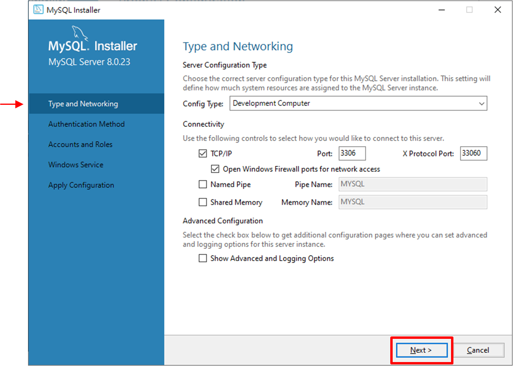

目錄
02 - MySQL 的安裝與設定
以下介紹兩大平台的 MySQL 安裝：
Windows 平台：
(1) 二進位版的軟體套件安裝(.mis安裝檔)：提供圖形化的安裝精靈過程
(2) 免安裝版的軟體套件安裝(.zip壓縮檔)：直接解壓縮即可使用
Linux 平台：使用命令列安裝
2.1 - Windows 平台下安裝與設定 MySQL 8.0
使用圖形化體套件安裝 MySQL 8.0
(1) 下載 MySQL 安裝檔
步驟 1
至 https://dev.mysql.com/downloads/installer 後，點選「Microsoft Windows」平台後，再點選「Download」按鈕
步驟 2 點選「Login」按鈕
步驟 3 輸入「使用者名稱」和「密碼」後，點選「登入」按鈕
步驟 4 點選「Download Now」按鈕，即開始下載
(2) 安裝 MySQL
步驟 1 雙點擊下載的「mysql-installer-community-8.0.23.0.msi」檔案
步驟 2 點選「Custom」
安裝類型分為5種：
(1) Developer Default (預設安裝類型)
(2) Server only (僅作為伺服器)
(3) Client only (僅作為用戶端)
(4) Full (完整安裝)
(5) Custom (自訂安裝類型)
步驟 3 點選「MySQL Server 8.0.23 - X64」、「MySQL Docymentation 8.0.23 - X64」和「Samples and Examples 8.0.23 - X64」
步驟 4 點選「Execute」按鈕

步驟 5 安裝完成安裝完成
(3) 設定 MySQL
步驟 1 (2) 安裝 MySQL 的 步驟 5
步驟 2 採用「預設」設定

預設 Config Type 為 「Development Computer」；
預設 Port 為 「3306」。
其中，「Config Type」選項用於設定伺服器類型
(1)
(2)
(3)
提示
建議初學者點選「Development Machine」選項，使佔用系統的資源比較少
步驟 3 點選第二個選項「Use Legacy Authentication Method (Retain MySQL 5.x Compatibility)」
第一個選項涵義是 MySQL 8.0 的新授權方式，採用 SHA256 基礎的密碼加密方法。
第二個選項涵義是 MySQL 5.x 的舊授權方式。
步驟 4 輸入兩次相同的登入密碼
提示
系統預設的使用者名稱為 root ，如果想要增加使用者，可以點選「Add User」按鈕
步驟 5 設定伺服器名稱為「MySQL」

步驟 6 確認伺服器的設定
步驟 7 完成伺服器的設定

步驟 8 開啟「工作管理員」，確認 MySQL 已啟動
2.2 - 啟動服務並登入 MySQL 資料庫
2.3 - MySQL 常用圖形管理工具
2.4 - Linux 平台下安裝與設定 MySQL 8.0
2.5 - 專家解惑
2.6 - 經典習題